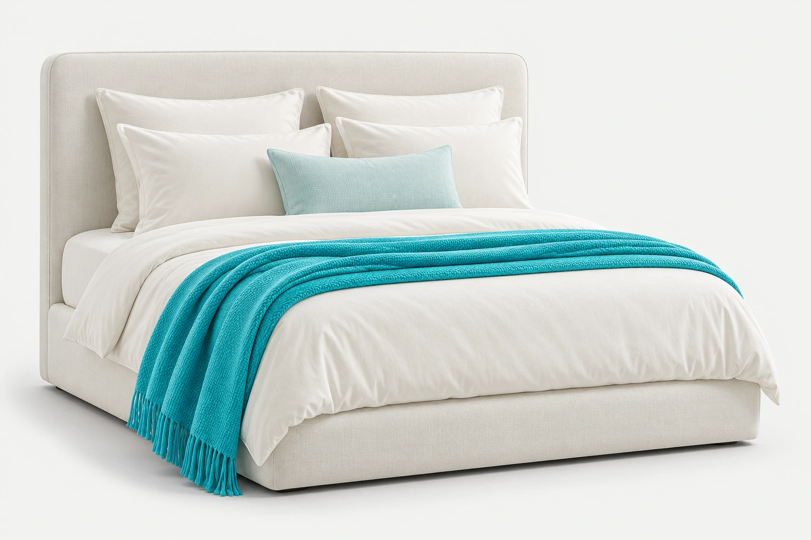
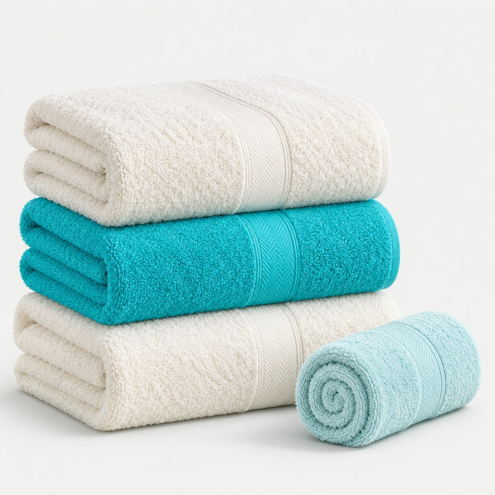
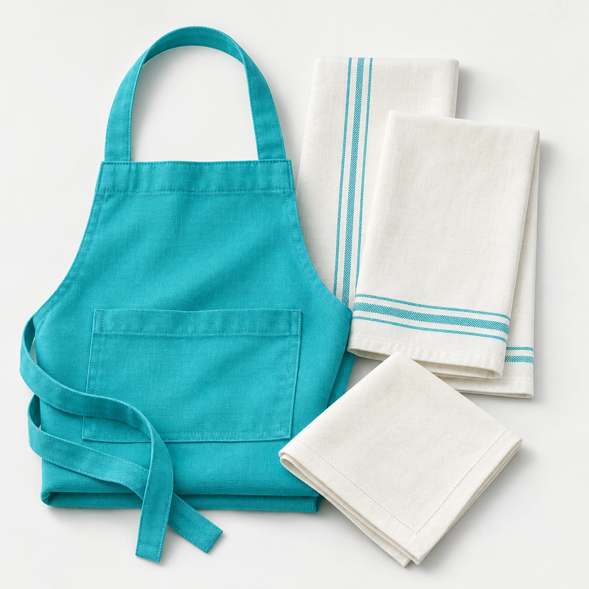
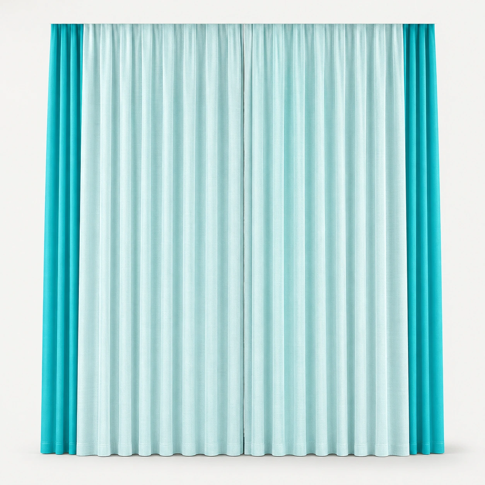
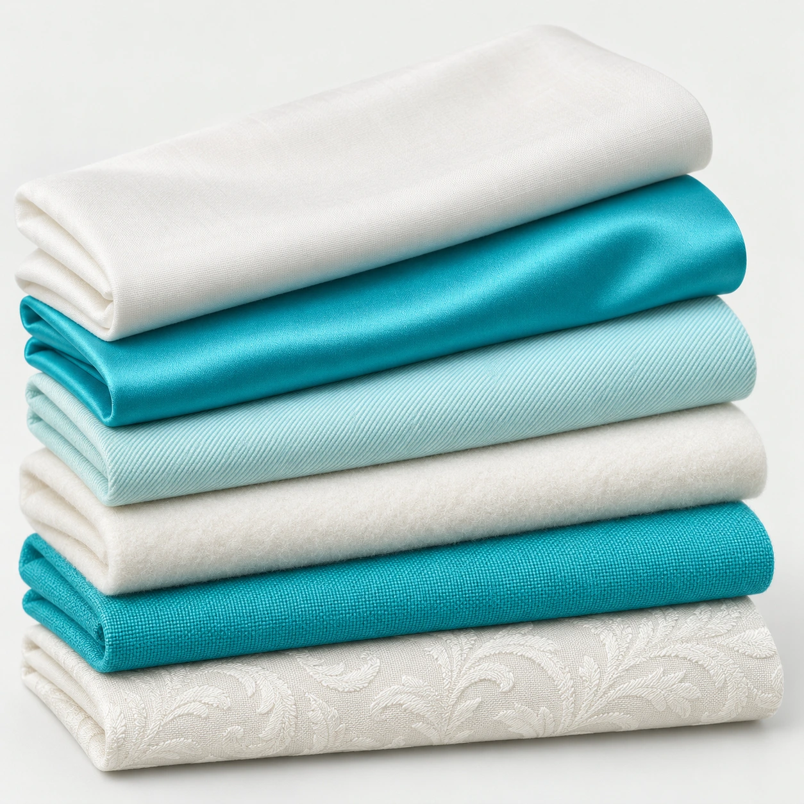

A softer end
to every day.
Bed linen that brings the room together. Explore sheet sets, duvet covers, comforters and the details that complete a bed.

A considered approach to textile manufacturing, since 1996.
At Maguari Textile, we bring together woven and knitted capabilities, product development and a commitment to quality. We develop home textiles around the needs of our customers and the spaces they supply.
From Pakistan to international business, our focus remains simple: thoughtful products, lasting relationships and dependable performance.
Discover our approach ↗Considered textiles for the bedroom,
the bath and everything in between.
Bed linen that brings the room together. Explore sheet sets, duvet covers, comforters and the details that complete a bed.
Terry towels and bathrobes for the everyday rituals that deserve a little more care.

Kitchen towels, aprons and table linen. A collection of useful, beautiful details for spaces that bring people together.

From blackout, velvet and jacquard curtains to cushions and covers. Bring texture and character to a room.

Concept imagery. Specifications confirmed on enquiry.

Find the right construction, composition and finish for your collection.
A collaborative approach to product development, with quality considered along the way.
Define the application, fabric, construction, finish and quantity. Good development starts with a clear understanding.
We bring your requirements together with new ideas and textile trends.
Bring approved specifications, samples and packaging requirements together for production coordination.
Fabric inspection, production checks and final audits support the agreed product requirements.
Packing, documentation and shipment coordination complete the journey from development to delivery.
Attention to how textiles look,
feel and perform.
Attention to tactile character and moisture absorption.
Colorfastness and appearance before and after washing.
Fabric strength and shrinkage checks.
Sample approval, in-process inspection and final audits.
Manufacturing roots in Pakistan. A focus on international textile business.
Tell us what you’re sourcing.
We’ll start with the details that matter.